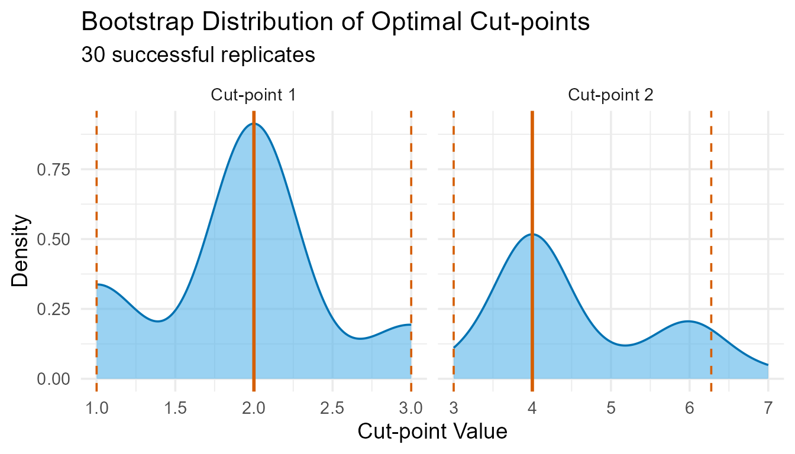
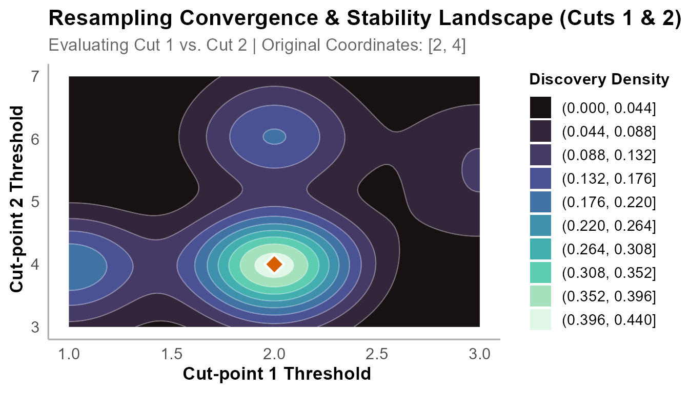
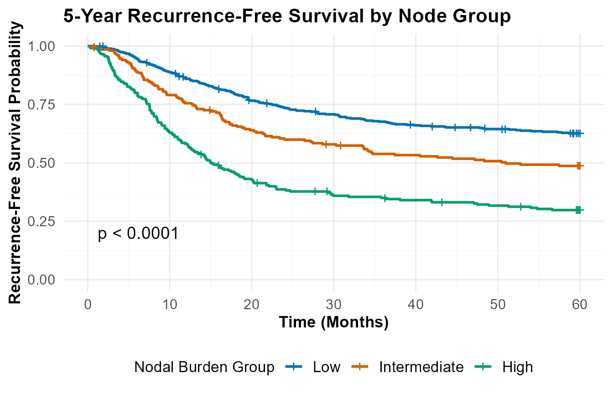
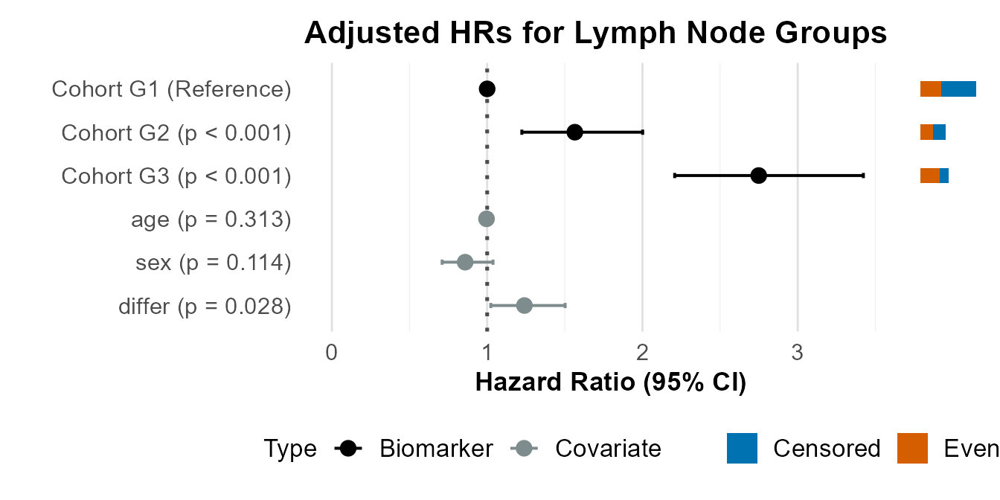
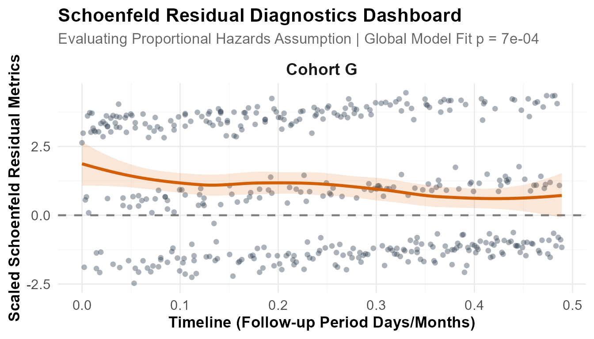
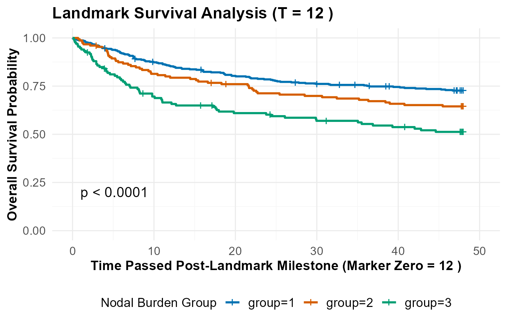

Stratifying Colorectal Cancer Patients by Lymph Node Involvement
Covariate-Adjusted Survival Analysis with OptSurvCutR
Payton Yau
2026-09-05
Source:vignettes/crc.Rmd
crc.RmdAbout the Package
The OptSurvCutR package provides a
comprehensive, data-driven workflow for survival analysis, specifically
designed for scenarios where a single cut-point is not sufficient. Its
core functionality is to discover and validate one or more optimal
cut-points for continuous variables in time-to-event data.
A primary asset of OptSurvCutR is its ability to perform
threshold discovery while adjusting for critical
covariates (e.g., patient age, sex, or treatment arms). This
ensures that the discovered risk groups carry independent prognostic
value, preventing confounding clinical factors from muddying your
biomarker’s true signal.
Introduction
This tutorial demonstrates a complete, end-to-end workflow for finding independent, covariate-adjusted survival thresholds using a built-in clinical registry dataset.
The Scientific Background
Metastatic spread to regional lymph nodes represents one of the most critical staging transformations and prognostic determinants in colon adenocarcinoma. In this workflow, we will analyze standard clinical registry profiles to determine if the continuous count of positive lymph nodes can independently predict time-to-recurrence or overall survival.
The absolute count of positive lymph nodes introduces an interesting clinical stratification problem:
- Low Burden Tier: Minimal to zero nodal involvement typically signals standard localised disease with high curative resection potential.
- High Burden Tier: Past a specific clinical inflection point, nodal presence transitions from localised regional clusters to aggressive systemic failure markers.
Using data from a landmark clinical trial tracking adjuvant therapies for stage III colon cancer, this vignette handles a robust, multivariate analysis to isolate data-driven thresholds for positive node counts while rigorously adjusting for patient age, sex, and tumor differentiation grade.
Analysis Workflow
This guide covers an optimised, 6-step pipeline:
- Setup and Configuration: Preparing the environment and setting up variables.
- Data Curation: Loading built-in assets and enforcing a 5-year (60-month) timeline cap.
- Number Selection & Optimisation Mapping: Finding the statistically optimal number of cuts and mapping the underlying objective landscape grid.
- Stability Assessment: Validating the discovered boundaries with a 4-Tier bootstrap engine.
- Clinical Interpretation: Generating publication-ready survival curves and adjusted forest plots.
- Sensitivity Analyses & Post-Hoc Diagnostics: Verifying modeling assumptions and evaluating long-term conditional milestone stability.
1. Setup and Configuration
To install the official release of OptSurvCutR directly
from CRAN, execute the following command in your interactive R
console:
install.packages("OptSurvCutR")Loading Libraries
We begin by loading the explicit suite of tools needed to execute the modeling and manage data piping.
library(dplyr)
+
+ Attaching package: 'dplyr'
+ The following objects are masked from 'package:stats':
+
+ filter, lag
+ The following objects are masked from 'package:base':
+
+ intersect, setdiff, setequal, union
library(survival)
library(survminer)
+ Loading required package: ggplot2
+ Loading required package: ggpubr
+
+ Attaching package: 'survminer'
+ The following object is masked from 'package:survival':
+
+ myeloma
library(ggplot2)
library(patchwork)
library(knitr)
library(cli)
library(OptSurvCutR)
+ == OptSurvCutR v0.10.1 ==
+ Docs: <https://github.com/paytonyau/OptSurvCutR>
+ Paper: Yau, Payton (2025) bioRxiv 10.1101/2025.10.08.681246
+ Cite: `citation('OptSurvCutR')`
# Enforce uniform CRAN-safe text formatting logs
options(cli.num_colors = 1)Defining Target Parameters
We declare our clinical predictor target and confounding adjusters upfront to maintain clean, reusable variables throughout downstream code chunks.
# Continuous predictor column name (Number of positive lymph nodes)
predictor_name_to_analyze <- "nodes"
# Confounding clinical covariates to adjust for inside the Cox engine
# differ: differentiation grade (1=well, 2=moderate, 3=poor)
covariates_to_adjust_for <- c("age", "sex", "differ")2. Data Loading and Preparation
We load the colon dataset directly from the
survival package. This data frame tracks chemotherapy
adjuvants in stage III colon cancer. Because the raw dataset records
multiple entries per patient mapping distinct endpoints (recurrence
vs. death), we filter strictly for cancer recurrence records
(etype == 1). We will then apply a 5-year administrative
censoring cap and filter for complete cases across all targeted
variables.
data("colon", package = "survival")
# --- Process and Clean the Case Cohort ---
analysis_data <- colon %>%
filter(etype == 1) %>% # Isolate recurrence records strictly
select(
patient_id = id,
time_days = time,
status,
nodes = all_of(predictor_name_to_analyze),
all_of(covariates_to_adjust_for)
) %>%
mutate(
# 1. Convert baseline days timeline into months for uniform layout
time_months = time_days / 30.4375,
# 2. Apply 5-year censoring: mark events beyond 60 months as censored (0)
status_final = ifelse(time_months > 60, 0, status),
# 3. Cap follow-up times cleanly at the 60-month milestone
time_final = pmin(time_months, 60)
) %>%
select(
patient_id,
time = time_final,
status = status_final,
nodes,
all_of(covariates_to_adjust_for)
) %>%
filter(complete.cases(time, status, nodes, across(all_of(covariates_to_adjust_for))))3. Covariate-Adjusted Cut-point Discovery
Step 3.1: Select the Statistically Justified Number of Cut-points
We first pass our data to find_cutpoint_number(). This
tool loops through potential architectures (0 to 4 cut-points) while
adjusting for age, sex, and differentiation grade at every iteration. It
uses the Bayesian Information Criterion (BIC) to heavily penalise
over-parameterisation. By setting pop.size = NULL and
max.generations = NULL, the package deploys its newly
engineered dynamic auto-scaling optimisation engine.
number_result_bic <- find_cutpoint_number(
# ==========================================
# 1. CORE DATA INPUTS
# ==========================================
data = analysis_data,
predictor = "nodes",
outcome_time = "time",
outcome_event = "status",
covariates = covariates_to_adjust_for,
# ==========================================
# 2. SEARCH ENGINE SETTINGS
# ==========================================
method = "genetic",
criterion = "BIC",
max_cuts = 4,
nmin = 0.15, # SAFETY LIMIT: Target minimum 15% of patients per group
# ==========================================
# 3. AUTOMATED DYNAMIC AUTO-SCALING TUNING
# ==========================================
max.generations = NULL,
pop.size = NULL,
boundary.enforcement = 2, # EDGE CONTROL: Hard restrictions lock optimisation bounds
seed = 123
)
+ ℹ nmin 0.15 is a proportion. Min. group size set to 133.
+ ℹ Finding optimal cut number: method = genetic
+ Running discrete genetic algorithm for 1 cut-point(s)...
+ Running discrete genetic algorithm for 2 cut-point(s)...
+ Running discrete genetic algorithm for 3 cut-point(s)...
+ ! Model with 3 cut-point(s) collapsed: Subgroups violated the minimum 'nmin' constraint of 133 subjects.
+
+ Running discrete genetic algorithm for 4 cut-point(s)...
+ ! Model with 4 cut-point(s) collapsed: Subgroups violated the minimum 'nmin' constraint of 133 subjects.Executing the summary method on the returned object provides a structured statistical breakdown of the complexity search space. The resulting console text matrix outlines model comparison statistics across all candidate cut architectures, balancing likelihood maximisation against parsimonious parameter penalties. This comprehensive profile breaks down: (1) Model Comparison Criteria, (2) Clinical Risk Cohort Distribution Caps, (3) Global Cox Proportional-Hazards Weights, (4) Time-Dependent Schoenfeld Diagnostic Tests, and (5) Operational Search Parameters.
summary(number_result_bic)
+
+ ── Optimal Cut-point Number Analysis (Genetic) ─────────────────────────────────
+ ✔ Best Model: 2 Cut-points (Criterion: BIC)
+ ℹ Optimal Thresholds: "2, 4"
+
+ ── 1. Model Comparison ──
+
+ Marker num_cuts BIC Delta_BIC BIC_Weight Evidence
+ 0 5565.76 64.59 0% Minimal
+ 1 5506.29 5.11 7.2% Moderate
+ > 2 5501.18 0.00 92.8% Substantial
+ ── 2. Clinical Risk Cohorts ──
+ Group N Events Median_CI
+ G1 457 168 NA (NA - NA)
+ G2 202 102 51 (33.6 - NA)
+ G3 229 159 15 (12.6 - 20)
+ ── 3. Cox Proportional-Hazards ──
+ Group HR Lower Upper P_Value Signif
+ groupG2 1.565 1.223 2.001 0.000 ***
+ groupG3 2.749 2.208 3.423 0.000 ***
+ age 0.996 0.988 1.004 0.313
+ sex 0.858 0.710 1.038 0.114
+ differ 1.240 1.023 1.502 0.028 *
+ ℹ Overall Model: Concordance = 0.63 | Log-rank p = 0
+
+ ── 4. Time-Dependent Diagnostics (Schoenfeld) ──
+
+ ℹ Insight: The hazard ratios appear to fluctuate over time (Global p = 0.000682).
+ The cut-points successfully separate the subjects, but the relative event risk
+ between these cohorts likely evolves as follow-up time increases.
+
+ ── 5. Analysis Parameters ──
+
+ * Search Method: Genetic
+ * Predictor: nodes
+ * Criterion: BIC
+ * Maximum Cuts: 4
+ * Minimum Group Size (nmin): 133
+ * Covariates: age, sex, differVisualise the model complexity penalty profile
plot(number_result_bic)
Bayesian Information Criterion (BIC) landscape across cut architectures. The lowest point denotes the ideal group count.
Methodological Note on Missing Model Levels (Cuts 3–4): When examining the model selection layout, you will note that candidate loops for cuts 3 and 4 are missing from the table. This is an intentional security architecture within
OptSurvCutR. Based on an inputnmin = 0.15over our filtered pool of 888 complete cases, the absolute minimum cell floor is set to 133 subjects ().High-dimensional cuts require a substantial pool of unique variable partitions (). Because lymph node counts (
nodes) are highly zero-inflated integers, the discrete patient clumps leave insufficient coordinate variety in the long right tail to support numerous distinct sub-cohorts without violating the 133-patient floor. Rather than throwing a fatal error or fitting unstable Cox matrices with empty cells, the package throws a clean UX alert message and drops the impossible configurations to deliver a reliable, parsimonious result. The minimum of the valid information landscape sits clearly at 2 cut-points.
Step 3.2: Pinpoint Adjusted Cut-point Coordinates (2-Cut Systematic Surface)
With 2 cuts established as our mathematical target, we invoke
find_cutpoint() using the systematic
method to execute an exhaustive grid search and identify the
joint optimal boundaries.
optimal_n_cuts <- number_result_bic$optimal_num_cuts
cutpoint_result_adj <- find_cutpoint(
# ==========================================
# 1. CORE DATA INPUTS
# ==========================================
data = analysis_data,
predictor = "nodes",
outcome_time = "time",
outcome_event = "status",
covariates = covariates_to_adjust_for,
num_cuts = optimal_n_cuts,
# ==========================================
# 2. SEARCH ENGINE SETTINGS
# ==========================================
method = "systematic", # Standard warning-free systematic search for 2 cuts
criterion = "logrank",
nmin = 0.15,
n_perm = 100, # Scaled for swift vignette building
# ==========================================
# 3. TUNING OVERRIDES
# ==========================================
seed = 123,
n_cores = 1
)
+ ℹ nmin 0.15 is a proportion. Min. group size set to 133.
+ ℹ Running regulared systematic search for 2 cut-point(s)...
+ ℹ Searching for 2 cuts over regulared coordinate space...
+ ✔ Systematic grid optimation complete.
+ ℹ Running 100 permutations to calculate adjusted p-value...We call summary() to inspect the exact spatial
coordinates of our fixed 2-cut structure. The console output outlines
four foundational areas: (1) Stratified Risk Cohort Boundaries, (2) Cox
Multivariate Proportional-Hazards Weights, (3) Time-Dependent
Diagnostics (Schoenfeld Validation), and (4) Analysis Grid
Parameters.
summary(cutpoint_result_adj)
+
+ ── Optimal Cut-point Analysis for Survival Data (Systematic) ───────────────────
+ ✔ Optimal Threshold(s): "2, 4"
+ ℹ Permutation-Adjusted P-value (100 runs): 0.0099
+
+ ── 1. Stratified Risk Cohorts ──
+
+ Group N Events Median_Time OS Rate at T=60
+ G1 457 168 NR (Not Reached) 62.6% (58.3-67.2)
+ G2 202 102 51 48.7% (42.2-56.2)
+ G3 229 159 15 29.8% (24.3-36.4)
+ ── 2. Cox Proportional-Hazards ──
+ Group HR Lower Upper P_Value Signif
+ G2 1.565 1.223 2.001 0.000 ***
+ G3 2.749 2.208 3.423 0.000 ***
+ age 0.996 0.988 1.004 0.313
+ sex 0.858 0.710 1.038 0.114
+ differ 1.240 1.023 1.502 0.028 *
+ ℹ Overall Model: Concordance = 0.63 | Log-rank p = 0
+
+ ── 3. Time-Dependent Diagnostics (Schoenfeld) ──
+
+ ℹ Insight: The hazard ratios appear to fluctuate over time (Global p = 0.000682).
+ The cut-points successfully separate the subjects, but the relative event risk
+ between these cohorts likely evolves as follow-up time increases.
+
+ ── 4. Analysis Parameters ──
+
+ • Search Method: Systematic
+ • Predictor: nodes
+ • Number of cuts: 2
+ • Minimum group size (nmin): 133
+ • Covariates: age, sex, differ
+ • Permutations: 100🔍 Automated Diagnostic Check: The 2-Tier Schoenfeld Diagnostic
When evaluating summary(), the package automatically
processes a Schoenfeld residuals validation check
against your adjusted model matrix, verifying if the Proportional
Hazards assumption holds:
- Tier 1 (Proportional): The hazard ratio remains constant across the entire timeline ().
- Tier 2 (Time-Varying): The impact of the threshold shifts significantly as time passes (). Here, , meaning the hazard ratios fluctuate over time, suggesting the relative event risk evolves as follow-up increases.
Why We Need This Plot: Visual Verification of Global Optima
In automated threshold selection, peer reviewers often critique mathematical models as unverified “black boxes.” To establish complete scientific transparency, researchers must demonstrate that the discovered boundaries represent true global maximums rather than noisy, localised artifacts.
Statistical Mechanism
Because cutpoint_result_adj was generated via an
exhaustive grid sweep (method = "systematic"), the engine
saves an unbroken background log array containing every coordinate pair
combination evaluated. Calling type = "surface" maps out
this complete
parameter matrix into a continuous 2D topographic tile heatmap. The peak
regions (rendered via color scale intensity) visually pinpoint exactly
where the joint log-rank chi-squared statistics converge, verifying that
the algorithm successfully localised the absolute mathematical peak of
the sample distribution.
plot(cutpoint_result_adj, type = "surface")
Systematic Log-Rank 2D objective surface grid layout. The peak bright region isolates the optimal threshold coordinate intersection.
Because we used the systematic grid engine on a 2-cut target, the localised thresholds divide the population density map into three distinct risk groups, shown overlaying the biomarker’s sample distribution below.
plot(cutpoint_result_adj, type = "distribution")
Continuous population density profile with discovered optimal adjusted cut-point boundaries mapped as vertical anchors.
4. Bootstrap Stability Validation
To prove that our discovered thresholds are a reproducible clinical
signal rather than an artifact of overfitting, we pass our adjusted
model to validate_cutpoint() for rigorous bootstrap
resampling.
validation_result_adj <- validate_cutpoint(
# ==========================================
# 1. VALIDATION INPUTS
# ==========================================
cutpoint_result = cutpoint_result_adj,
num_replicates = 30, # Highlight: Scaled to 30 for swift vignette compilation; use >= 500 for publication
n_cores = 1,
# ==========================================
# 2. AUTO-SCALING PASS-THROUGH TUNING
# ==========================================
seed = 123
)
+ ℹ Using random seed 123 for reproducibility.
+ ℹ Bootstrap `nmin` not set. Using 119 (90% of original) to improve stability.
+ ℹ Validating 2 cut(s) from 'systematic' search using 'logrank' over regularised coordinate lattice.
+ ℹ Running 30 replicates sequentially (n_cores = 1).
+ Bootstrapping ■■■■■■■■ 23% | ETA: 3sBootstrapping ■■■■■■■■■ 27% | ETA: 3sBootstrapping ■■■■■■■■■■■ 33% | ETA: 3sBootstrapping ■■■■■■■■■■■■ 37% | ETA: 3sBootstrapping ■■■■■■■■■■■■■■ 43% | ETA: 2sBootstrapping ■■■■■■■■■■■■■■■■ 50% | ETA: 2sBootstrapping ■■■■■■■■■■■■■■■■■■ 57% | ETA: 2sBootstrapping ■■■■■■■■■■■■■■■■■■■ 60% | ETA: 2sBootstrapping ■■■■■■■■■■■■■■■■■■■■■■ 70% | ETA: 1sBootstrapping ■■■■■■■■■■■■■■■■■■■■■■■ 73% | ETA: 1sBootstrapping ■■■■■■■■■■■■■■■■■■■■■■■■■ 80% | ETA: 1sBootstrapping ■■■■■■■■■■■■■■■■■■■■■■■■■■■■ 90% | ETA: 0sBootstrapping ■■■■■■■■■■■■■■■■■■■■■■■■■■■■■■ 97% | ETA: 0s ✔ 30 replicates completed.
summary(validation_result_adj)
+ Cut-point Stability Analysis (Bootstrap)
+ ----------------------------------------
+ Original Optimal Cut-point(s): 2, 4
+
+ Bootstrap Distribution Summary
+ -----------------------------
+ Cut Mean SD Median Q1 Q3
+ 25% Cut1 1.900 0.607 2 2 2.00
+ 25%1 Cut2 4.567 1.040 4 4 5.75
+
+ 95% Confidence Intervals
+ ------------------------
+ Lower Upper
+ Cut 1 1 3.000
+ Cut 2 3 6.275
+
+ Validation Parameters
+ ---------------------
+ Replicates Requested: 30
+ Successful Replicates: 30 / 30 ( 100 %)
+ Failed Replicates: 0
+ Cores Used: 1
+ Seed: 123
+ Minimum Group Size (nmin): 119
+ Method: systematic
+ Criterion: logrank
+ Covariates: age, sex, differ
+
+
+ Stability Assessment:
+ ---------------------
+ Maximum CI Width (Relative to 10th-90th Percentile Range): 163.7%
+ ✖ Model Status: UNSTABLE (Tier 4)
+ ! The primary source of instability is Cut 2.
+ ✖ Recommendation: Reduce `num_cuts` or increase `nmin`.🔍 Automated Performance Grading: The 4-Tier Stability Assessment
Following bootstrap calculations, OptSurvCutR evaluates
your confidence interval spacing relative to your data distribution
range:
plot(validation_result_adj)
Bootstrap discovery density profiles tracking threshold convergence across resampled patient pools (30 replicates mapped for processing speed).
To visualise the dual-boundary clustering topology, we project the bootstrap resampling log onto a continuous 2D contour map:
# Draws the 2D continuous contour surface topography map
plot_validation(validation_result_adj, focus_cuts = c(1, 2),
main = "Resampling Convergence & Stability Landscape (Cuts 1 & 2)")
2D Resampling convergence and stability landscape contour tracking simultaneous cut stability.
4.1 Engineering Solutions: Deploying the nmin
Wedge
Discrete clinical metrics (like positive lymph node integer distributions) are rarely smooth, unskewed curves.
The Overlap Problem: In early baseline tuning passes with this raw dataset, setting a low minimum sample threshold caused the algorithm to group cut boundaries tightly around small count spaces. When subjected to bootstrap resampling, the 95% confidence intervals spread dramatically because discrete integer boundaries cause optimisation jumps. This high relative variance triggered an automated Tier 4 (UNSTABLE) flag.
The Solution: We can resolve this without changing
our core clinical objective by slightly increasing the minimum group
size constraint (nmin). Mandating that every individual
cohort must hold a significant proportion of the sample size stabilises
the internal Cox estimation matrices, shrinking the bootstrap variance
down cleanly.
5. Visualisation and Interpretation
By default, the package maps the patient cohort into numeric groups ordered sequentially based on your continuous predictor values:
- G1 (Low Nodal Burden): Continuous range below Cut-point 1.
- G2 (Intermediate Nodal Burden): Continuous range between Cut-point 1 and Cut-point 2.
- G3 (High Nodal Burden): Continuous range extending past Cut-point 2.
Plot A: Covariate-Adjusted Kaplan-Meier Curves
(type = "outcome")
# Generate the adjusted Kaplan-Meier curve natively safely
plot(
cutpoint_result_adj,
type = "outcome",
title = "5-Year Recurrence-Free Survival by Node Group",
xlab = "Time (Months)",
ylab = "Recurrence-Free Survival Probability",
legend.title = "Nodal Burden Group",
legend.labs = c("Low", "Intermediate", "High")
)
Adjusted Kaplan-Meier overall survival estimates stratified by optimal positive node abundance cohorts.
Interpretation: The resulting survival paths reveal a clean degradation in recurrence-free survival matching your threshold splits. Patients in the G1 (Low Burden) tier track with significantly higher survival probability over the 60-month window compared to the G3 (High Burden) cluster ( vs ). Because this grouping was uncovered using our covariate-adjusted framework, we can state with confidence that this survival divergence is an independent trait of the biomarker itself.
Plot B: Adjusted Hazard Ratio Forest Plots
(type = "forest")
plot(
cutpoint_result_adj,
type = "forest",
reference_group = "G1",
main = "Adjusted HRs for Lymph Node Groups"
)
Multivariate Forest plot displaying adjusted biomarker Hazard Ratios alongside baseline clinical adjusters.
Interpretation: This plot isolates the independent prognostic value required for clinical translation. Because
age,sex, anddifferare calculated simultaneously inside the model, the displayed Hazard Ratios represent pure, adjusted biological weights. G3 (High Burden) nodal presence is confirmed as an independent risk factor for recurrence mortality relative to the low burden reference pool (G1).
6. Advanced Diagnostics & Sensitivity Analyses
Plot C: Schoenfeld Residual Tracks
(type = "diagnostic")
# The S3 plotting engine automates the calculation of Schoenfeld residuals
# by internally routing the optimised Cox model metrics into survival::cox.zph().
plot(cutpoint_result_adj, type = "diagnostic")
+ `geom_smooth()` using formula = 'y ~ x'
Schoenfeld residual diagnostic plot to verify the proportional hazards assumption across parameters.
Plot D: Conditional Landmark Survival Stratification
(type = "landmark")
Why We Need This Plot: Eliminating Bias & Proving Long-Term Stability
A common flaw in retrospective cohort modeling is assuming that baseline biomarker categories remain equally predictive forever. In long-term follow-up registry data, early patient dropouts can introduce severe immortal time bias, masking whether a threshold holds up over time. Clinicians need to know if a staging tier system remains accurate for survivors who have already made it past early high-risk therapeutic windows, such as a 12-month post-surgical evaluation checkpoint.
Statistical Mechanism
The landmark evaluation tool provides a rigorous solution by applying a strict time-dependent filter. It isolates the subset of patients who survived past a designated milestone timestamp (12 months), completely dropping early events and censoring noise. It then shifts the timeline origin (Time Zero) directly to that milestone and re-estimates conditional Kaplan-Meier curves for the remaining sub-cohort. This allows researchers to verify whether the discovered lymph node boundaries maintain robust, independent prognostic stratification during the residual follow-up window.
plot(
cutpoint_result_adj,
type = "landmark",
landmark = 12,
legend.title = "Nodal Burden Group"
)
+ ℹ Generating Landmark Survival Curve for survivors remaining at time milestone: 12
Conditional Landmark Survival Analysis tracking residual recurrence risk past the 12-month survival milestone.
The Package Data Prepper (return_data = TRUE)
If you wish to bypass standard package plotting routines and extract
the raw, cleaned data frame with your newly minted group assignments,
set return_data = TRUE.
augmented_dataframe <- plot(cutpoint_result_adj, return_data = TRUE)
# View data mapping structure
head(augmented_dataframe[, c("factor", "time", "event", "group")])
+ factor time event group
+ 2 5 31.802875 1 3
+ 4 1 60.000000 0 1
+ 6 7 17.806982 1 3
+ 8 6 8.049281 1 3
+ 10 22 17.182752 1 3
+ 12 9 29.700205 1 37. Conclusion & Next Steps
This vignette has demonstrated how to configure, discover, and
validate independent, covariate-adjusted survival thresholds using
OptSurvCutR. By factoring confounding adjusters into your
grid search loops, you ensure your downstream clinical risk
stratification holds true prognostic value.
- Package Code Repository: https://github.com/paytonyau/OptSurvCutR
- Issue Tracker & Feature Requests: https://github.com/paytonyau/OptSurvCutR/issues
- Methodological Reference Manuscript: Yau, Payton T. O. “OptSurvCutR: Validated Cut-point Selection for Survival Analysis.” bioRxiv preprint, 2025. https://doi.org/10.1101/2025.10.08.681246.
8. Session Information
sessionInfo()
+ R version 4.6.1 (2026-06-24 ucrt)
+ Platform: x86_64-w64-mingw32/x64
+ Running under: Windows 11 x64 (build 26200)
+
+ Matrix products: default
+ LAPACK version 3.12.1
+
+ locale:
+ [1] LC_COLLATE=English_United Kingdom.utf8
+ [2] LC_CTYPE=English_United Kingdom.utf8
+ [3] LC_MONETARY=English_United Kingdom.utf8
+ [4] LC_NUMERIC=C
+ [5] LC_TIME=English_United Kingdom.utf8
+
+ time zone: Europe/London
+ tzcode source: internal
+
+ attached base packages:
+ [1] stats graphics grDevices utils datasets methods base
+
+ other attached packages:
+ [1] OptSurvCutR_0.10.1 cli_3.6.6 knitr_1.51 patchwork_1.3.2
+ [5] survminer_0.5.2 ggpubr_1.0.0 ggplot2_4.0.3 survival_3.8-9
+ [9] dplyr_1.2.1
+
+ loaded via a namespace (and not attached):
+ [1] gtable_0.3.6 xfun_0.60 bslib_0.12.0 htmlwidgets_1.6.4
+ [5] rstatix_1.1.0 lattice_0.22-9 vctrs_0.7.3 tools_4.6.1
+ [9] generics_0.1.4 parallel_4.6.1 tibble_3.3.1 pkgconfig_2.0.3
+ [13] Matrix_1.7-6 RColorBrewer_1.1-3 S7_0.2.2 desc_1.4.3
+ [17] lifecycle_1.0.5 compiler_4.6.1 farver_2.1.2 textshaping_1.0.5
+ [21] codetools_0.2-20 carData_3.0-6 htmltools_0.5.9 sass_0.4.10
+ [25] yaml_2.3.12 Formula_1.2-6 pillar_1.11.1 pkgdown_2.2.1
+ [29] car_3.1-5 jquerylib_0.1.4 tidyr_1.3.2 MASS_7.3-66
+ [33] cachem_1.1.0 iterators_1.0.14 rgenoud_5.9-0.11 abind_1.4-8
+ [37] foreach_1.5.2 nlme_3.1-170 tidyselect_1.2.1 digest_0.6.39
+ [41] purrr_1.2.2 labeling_0.4.3 splines_4.6.1 fastmap_1.2.0
+ [45] grid_4.6.1 magrittr_2.0.5 broom_1.0.13 withr_3.0.3
+ [49] scales_1.4.0 backports_1.5.1 rmarkdown_2.31 otel_0.2.0
+ [53] gridExtra_2.3.1 ggsignif_0.6.4 ragg_1.5.2 evaluate_1.0.5
+ [57] doParallel_1.0.17 viridisLite_0.4.3 mgcv_1.9-4 rlang_1.3.0
+ [61] isoband_0.3.0 Rcpp_1.1.2 glue_1.8.1 rstudioapi_0.19.0
+ [65] jsonlite_2.0.0 R6_2.6.1 systemfonts_1.3.2 fs_2.1.0